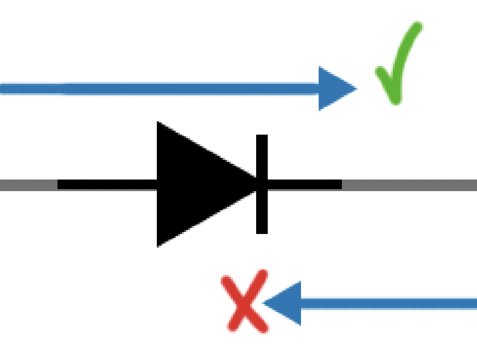
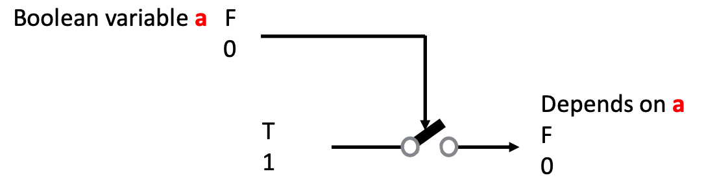
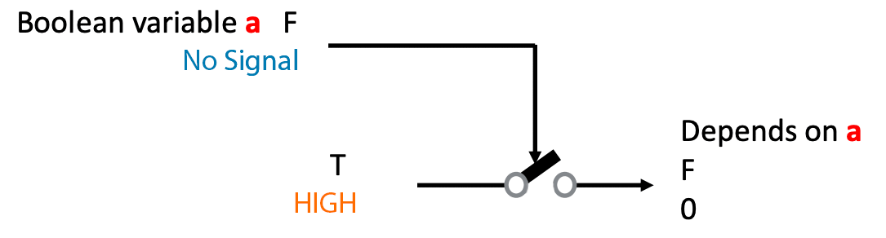
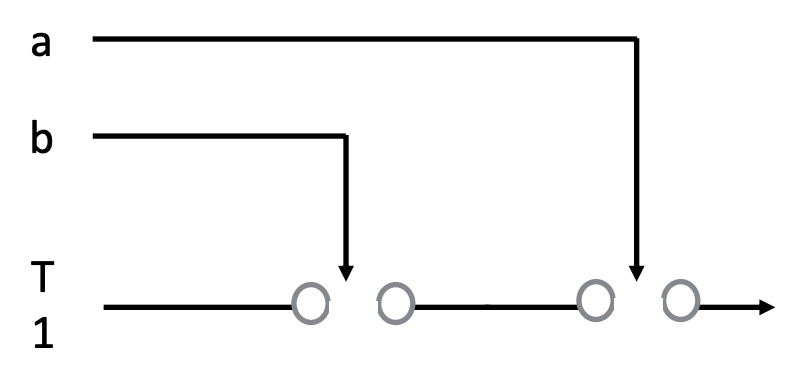
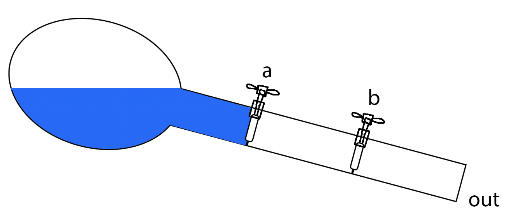
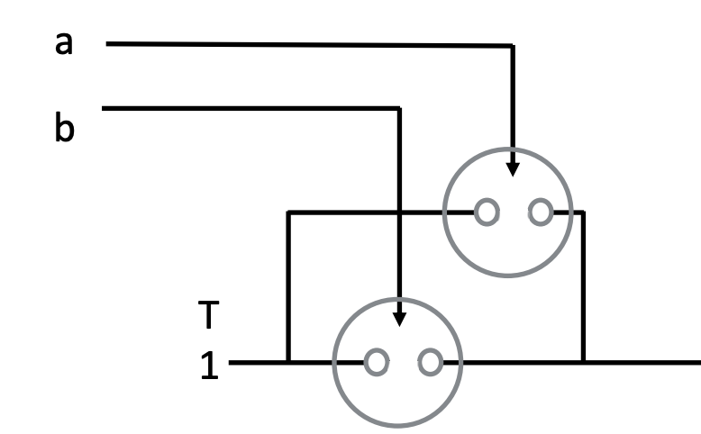
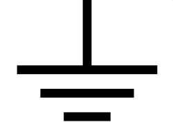
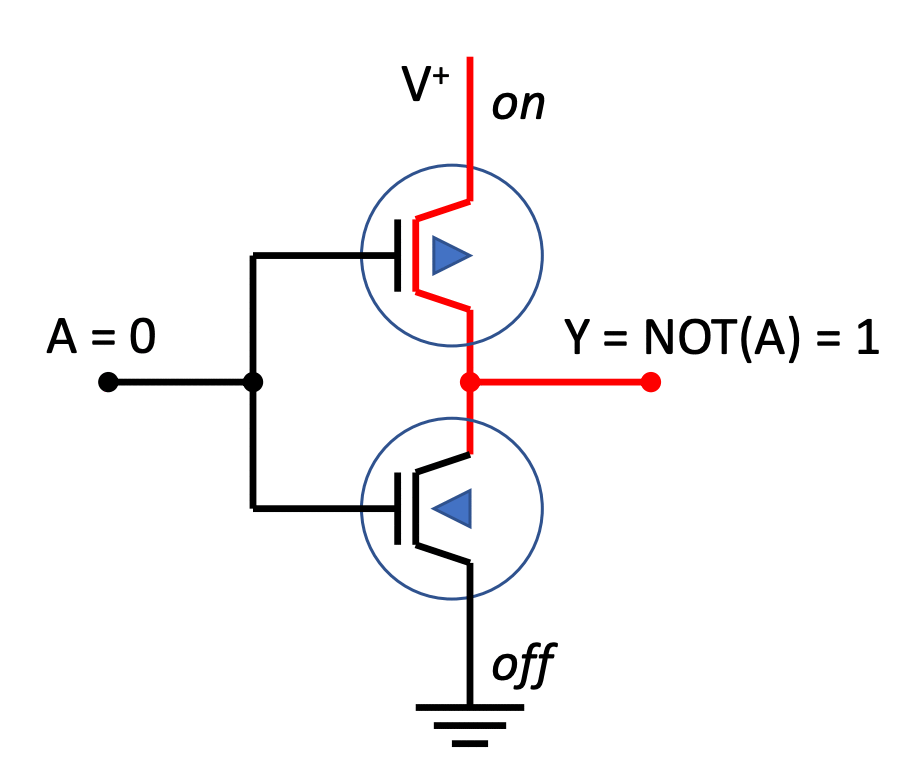

Lecture Notes 04: Logic Gates
Outline
This class we'll discuss:
- Recap: Boolean logic and functions
- Recap: Water Analogy
- The Diode
- The Transistor
- Circuit symbols
- Integrated Circuits
- Building the basic gates
- Working with logic gates
- Simulating a Circuit
- Final Project: possible themes
 For now, we're looking at the "what?" not the "how?"
For now, we're looking at the "what?" not the "how?"
Recap: Boolean Logic
recall that we can combine logical operators to obtain a truth value output:

Now, we want to convert this logic that uses truth values into circuits that use electrical signlas.
Recap: The Water Analogy
recall that we can use water to build intuition about how circuits and signals work

The Diode
The diode is an electric component that acts like a "one way valve" but for current, instead of water.
The symbol for a diode is like an arrow with a barrier (current can onl pass in the direction of the arrow):

The Transistor
A transistor is an electronics component that lets electricity pass through from one of its input pins (collector) to one of its output pins (emitter) if there is an input on the third signal pin (base).

The brilliance here is that this allows an electric signal (that can be programmed) to control another electric signal; making the electric component capable of self-guidance.
The transistor works like that:
- if there is no signal into the base, then current does not flow from collector to emitter;
- if there IS a signal into the base, then current flows from the collector into the emitter (and one can use that current to do other things);
The following is an animation of a simplified transistor:

One of the main uses of a transistor is as a
switch, where some signal allows the passage of current to another part of the circuit.
However, the signal can be a low-voltage (low current) one and it might allow the passage of a HIGH-voltage (high-current) one.
Because of this, transistors can also be used as
Amplifiers:

We can join several of these transistors in different ways to create circuits that reproduce logic operations on input variables (signals).
Combining transistors to generate logic
Given the way transistors work, and using the simplified operation shown above,
Activity 1 :[2 minutes] : Analyze this diagram and discover the behavior of the circuit:

- How should we analyze it?
- What does this resemble in Boolean Logic?
Logic Gates
A logic gate is a digital circuit that behaves like its boolean operator counterpart.
The Boolean Operations and the Logic gates are shown in the tables below:
Let's see one simplified view of a gate in and how the transistors help the logic:

The transistors act as switches that can let current flow through or not.
In this case, the two inputs (a and b) are used to activate the switches (into the
base of the transistor) to allow the passage of a default
True (current).
Note that
only if both
a and
b are
1 does the output of the gate result in
1.
In the water analogy, it is like a pipe with a reservoir in one side and two valves in series.

Either both valves are open or no water flows.
Note that in this example, instead of water pressure, we are using gravity. I have added this example in case you see it somewhere else in the literature or on the web.
Activity 2 :[2 minutes] : Analyze this diagram and discover the behavior of the circuit:

- What does this resemble in Boolean Logic?
Building a NOT circuit
We need two switches to build a NOT:
- \(\texttt{V}^+\) is a constant source of high voltage
-  is a ground connection (low voltage)
- A is the input wire
- Y is the output wire
- The triangles in the switches indicate
-
differing response to the gate input:
- when one is open,
- the other will be closed
The way it works is shown below:

DEMO
TODO: ADD DEMO: https://logic.ly/demo/
Before next class (TODO)
[Due for everyone]